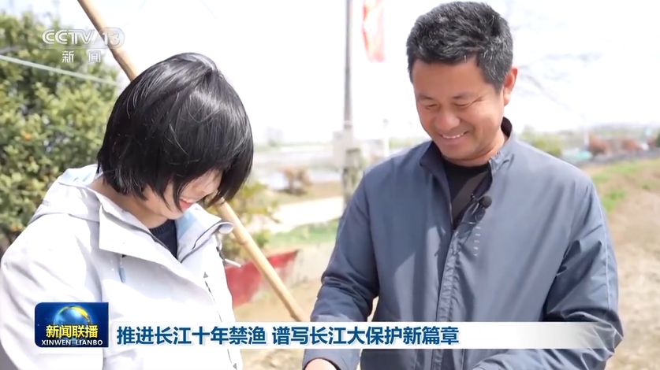

【新思想引领新征程】推进长江十年禁渔 谱写长江大保护新篇章
央视网 2024年05月15日 20:07
在长江南源，一处小头裸裂尻鱼新的栖息地被发现，鱼的数量大约超3万尾，为水生态保护提供了珍贵数据。
在长江中游，追踪显示，人工增殖放流的中华鲟成功入海率已经从45%左右提升至60%以上； 鄱阳湖鱼类小型化、低龄化趋势得到遏制，栖息地生存环境得以改善。
在长江下游，今年3月起，南京秦淮河入江口首次出现野生中华绒螯蟹大规模洄游现象，种群数量明显增加。

水生生物资源恢复向好，见证了长江十年禁渔三年多来的阶段性成果。
实施长江十年禁渔，是以同志为核心的党中央从中华民族长远利益出发作出的重要决策。 党的十八大以来，总书记多次深入长江沿线考察调研，详细了解长江十年禁渔的实施情况， 他指出，要坚定推进长江十年禁渔，巩固好已经取得的成果。
按照部署，自2021年1月1日起，在长江干流、大型通江湖泊、重要支流和长江口部分海域实行为期十年的禁渔， 常年禁止天然渔业资源的生产性捕捞。禁渔三年多来，相关评估显示： 长江干流和鄱阳湖、洞庭湖水生生物完整性指数由禁渔前最差的“无鱼”提升了两个等级。 2022年，长江江豚数量达到1249头，实现历史性止跌回升。长江干流水质连续4年全线保持Ⅱ类。
实施长江十年禁渔，解决好渔民上岸后的生产生活问题，禁渔才有稳定扎实的社会基础。
安徽退捕转产的3万多名渔民，在政府的引导下接受就业培训。在当涂县，免费学习养殖技术，养殖生态螃蟹成了退捕渔民的新选择。
在拥有洞庭湖超六成水域的湖南岳阳，政府帮扶上岸渔民建起养殖场，发展风干鱼产业，还带领他们学习直播带货，拓宽销路。
在渔民退捕上岸的鄱阳湖棠荫岛，当地在继续保护好生态的前提下，正探索规划利用独特的自然资源发展旅游产业。 禁渔三年多来，有关部门对23.1万退捕渔民逐一建档立卡，多渠道提升就业、社保水平。

长江十年禁渔实施以来，沿江省市合力攻坚、久久为功，长江大保护不断向纵深推进，持续巩固禁渔成果。 下一步，沿江省市还将加强水生生物重要栖息地修复，建立退捕渔民动态精准帮扶服务，完善跨区域、跨部门执法合作机制， 确保一江清水绵延后世、惠泽人民。